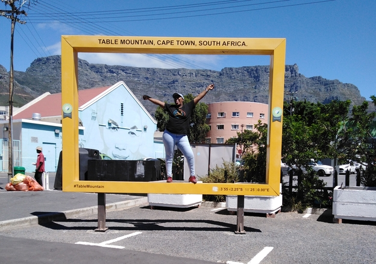

Nonkululeko Cekiso
Paris
 The Food Marked with great delis, restaurants, and cafes, the city of Paris is a haven for food lovers. From scrumptious crepes to tasty cassoulets, macarons, and cheese,
Paris will impress you. The wine is a must-try too. When you visit, you will meet chefs who believe food is as important as love. You can watch them make delights showing what they know how to do best. Built by Gustave
Eiffel to commemorate the centenary of the French Revolution, it is presented at the Exposition Universelle in Paris in 1889. 324 meters high, it is one of the most visited monuments in the world with nearly 7 million visitors
a year.
The Food Marked with great delis, restaurants, and cafes, the city of Paris is a haven for food lovers. From scrumptious crepes to tasty cassoulets, macarons, and cheese,
Paris will impress you. The wine is a must-try too. When you visit, you will meet chefs who believe food is as important as love. You can watch them make delights showing what they know how to do best. Built by Gustave
Eiffel to commemorate the centenary of the French Revolution, it is presented at the Exposition Universelle in Paris in 1889. 324 meters high, it is one of the most visited monuments in the world with nearly 7 million visitors
a year.
Foreign language
I would like to learn one of the Nigerian official languages Igbo language
| Igbo | English |
|---|---|
| Nnọọ | hello |
| Kedu ka ị mere | How are you doing |
| Biko | Please |
Church Square, spin street
 Church Square is one of the three early areas of land about which the early town developed and its boundaries probably began to be defined in 1679 when the first public
building, a slave lodge, today known as the Old Supreme Court, was built on its southern side. In1701 the Dutch Reformed Church, known as the Groote Kerk.
Church Square is one of the three early areas of land about which the early town developed and its boundaries probably began to be defined in 1679 when the first public
building, a slave lodge, today known as the Old Supreme Court, was built on its southern side. In1701 the Dutch Reformed Church, known as the Groote Kerk.
City Hall
 Cape Town City Hall is one of our oldest and most central public spaces and home to the Cape Philharmonic Orchestra. Following a lengthy makeover, the heritage venue
is available for a wide range of cultural and social events.
Cape Town City Hall is one of our oldest and most central public spaces and home to the Cape Philharmonic Orchestra. Following a lengthy makeover, the heritage venue
is available for a wide range of cultural and social events.
District Six Museum
 The ‘Hands Off District Six’ conference of 1988 led to the formation of the District Six Museum Foundation in 1989. The Foundation worked towards the establishment of the
Museum which was launched on 10 December 1994 with its inaugural exhibition called Streets: Retracing District Six.
The ‘Hands Off District Six’ conference of 1988 led to the formation of the District Six Museum Foundation in 1989. The Foundation worked towards the establishment of the
Museum which was launched on 10 December 1994 with its inaugural exhibition called Streets: Retracing District Six.